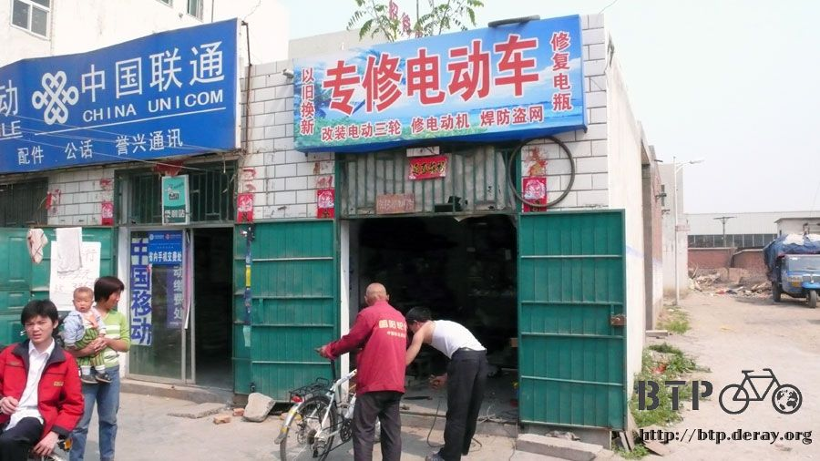
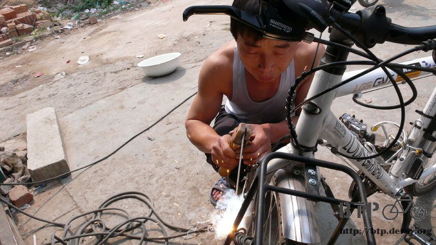
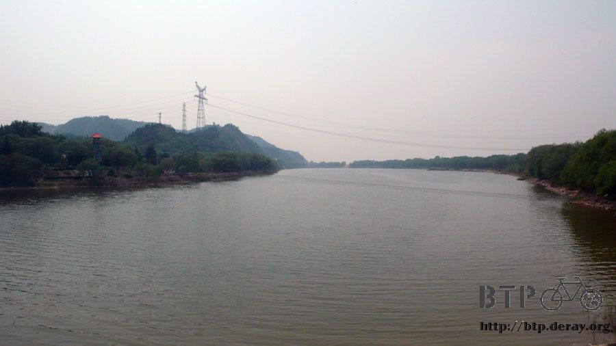
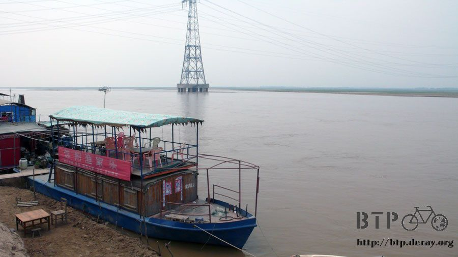
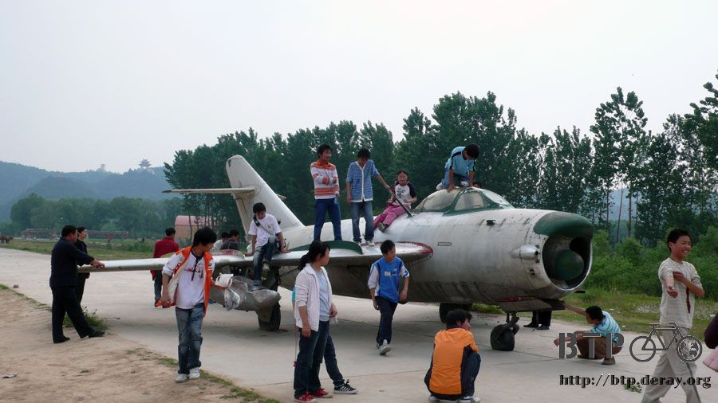
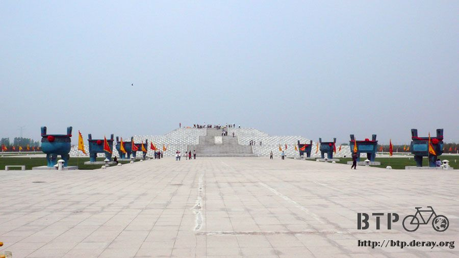
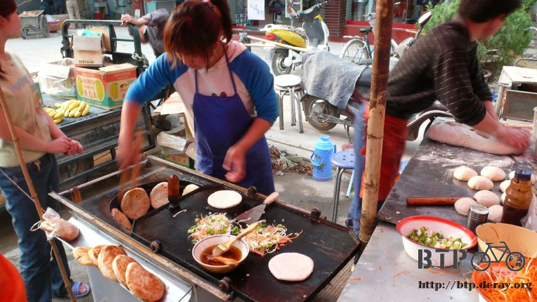

An afternoon at Yellow River
Today is a manic Monday. When every one is getting ready for work, I am in Zhengzhou, China, relaxing.
Although I wanted to sleep in, but my biological clock woke me up at 5:00.
It’s a rare treat to stay in such comfortable room even though it was a little bit more expensive,
but I felt like I am in a five-star hotel. When I woke up, for a moment, I didn’t know where I was.
There was not much I could do early in the morning.
So I went downstairs to have for a decent breakfast. The area along the street I was staying is called “Liu Village” .
There are many hotels and restaurants. When I walked downstairs, I found that the front metal gate was not even opened yet.
It appeared that I was the first person to wake up this morning.
When I stretched and yawned, I could smell the breakfast coming from somewhere near by.

I ordered a bowl of soybean milk and an order of four pan-fried biscuits.
The biscuits have round shapes with some unidentified fillings. It tasted sweet.
I wanted to order something looked like small version of fried bread sticks,
but they were sold by kilogram and that was just too much for me :(
When the soybean milk came, I had a sip and it was horrible.
There was no sweetness to it. It tasted more like sour soy milk.
I saw other people used their spoons to scoop a spoonful of sugar to mix in with their soybean milk so I did the same.
What a relaxing breakfast. I didn’t have to ride bike and eat breakfast at the same time.
I didn’t have to munching on the pathetic dry food. Total cost of breakfast was 1.50 RMB, very inexpensive.
In the morning, I brought Dido to the repair shop next to the hotel.
I tried to use Henan dialect by imitating foreigners speaking Chinese.
I told the owner that one of the screws in the front rack was loosed.
There were some wear on the screw so I couldn’t tighten it up.
Can you weld it shut? So it will be solid.
Just in case, I asked him to weld all the other 7 screws that were still in tact.
I don’t think I ride back with these heavy bags on the back if the front rack breaks in the middle of nowhere.

I asked the owner for an estimate for welding all eight screws.
I pretended to be poor and had no money and hoped I could get a cheap price.
And the owner only asked for 2 RMB and that was much cheaper than I expected :D
I was holding Dido for the owner while he was welding the screws one by one.
Well, let’s consider this as “destructive maintenance”.
When I arrive in Paris, how will I take the front rack off the bike to pack before shipping back to Taiwan?
Oh well, that’s the problem won’t happen until half year later.
I will worry about it then. It’s more important to fix the problem now.

After finished welding, I borrowed a bucket of water and a towel to clean the dirt off Dido slowly.
It has only been a week and the bike was covered with a layer of dirt.
Carefully wiped down, Dido looked more like in its original appearance now.
I have stored my travel logs in iPod and then upload them at Internet cafés.
It only cost 1 RMB per hour at the cheaper CRT screen area.
Since there was nothing to do in the morning, I spent two hours there.
At the same time, I have uploaded travel logs up to 29th.
Today is April 30th and tomorrow is May 1st. In Taiwan, it is a one-day Labor Day holiday.
But in China, May 1st is the beginning of a long holiday week.
Everyone in China is traveling, either going home or travel.
This is a busy and happy week. As long as I will not get stock in traffic tomorrow, that is all that matter :(
At 12:30 pm, rode Dido without all the bags and brought my camera and GPS.
The plan is to spend an afternoon at Yellow River scenic area.
I thought the Yellow Riser was close, but ended up I had to ride almost an hour and half, approximately 25 km.
It’s like from SOGO on Chung Hsiao East Road to the sandwich shop in Keelung . Not close at all :(
Originally I wanted to stop at the entrance. Since bicycles are allowed inside, so I bought a ticket for 30 RMB.
The ticket indicated this is an AAAA class tourist attraction.
FOUR A’s! I was so looking forward to it, but very disappointed at the end : (

I am going to save everyone 30 RMB.
Let me be your tour guide and it will only take 5 minutes to tour this four A’s class tourist attraction.
When you first enter,
you will see gigantic sculptures of Yen and Yellow Emperors (known as the founders of Chinese civilization) sitting on top of stones.
Are they carved out of stone, I wonder? The lines are a little bit too clean.

Then there is the observation lake.

There are a few dozens of horses that you can pay a couple of RMB to take a picture of riding them.

There are many fishing boats selling fish. Of course the fish are from the Yellow River.

Don’t know why there is a beat up aircraft.
Probably it’s for the parents to take pictures of their kids climbing up and down the aircraft.

There is a big square with a platform surrounded with ancient bronze instruments (Maybe???)

You can also buy some incense here to pay respects to Chinese ancestors.
There are many kinds of incense, from regular ones to sizes that are as tall as an adult.

And that’s all, folks. That is what I spent 30 RMB for T_T
Give me back my money. I want to buy 30 pineapples on the stick with that money.
What kind of four A’s class tourist attraction ~"~
If I have known I would stop at the entrance. Only if I have known. Luckily I only spent 30 RMB.
Back to the hotel and took a nice shower, packed all the bags, tomorrow my journey will start again.
This time it will be heading toward west. South heading has come to an end.
Dinner was taking care of at the side streets. I saw some Islamic style baked biscuits.
It’s freshly made biscuits baked on top of a charcoal fire oven and they looked very crispy and smelled good.
You can buy them just plain or with fillings. The fillings are stir-fried bean sprouts,
shredded carrots, diced green onions, and choices of hotdogs or pan-fried eggs.
Then we can eat with biscuits with the filling inside.
I can not believe something so delicious costs only 1 RMB.

I bought another two of something looks like chicken nuggets on the stick,
one sausage on a stick, one chicken liver on the stick and total cost just 3 RMB.

As I was eating and walking back to the hotel, all the sudden a rumble of thunders and the rain started pouring down.
It was a sunny afternoon, and the weather changed in a split second.
Luckily it was a quick shower; otherwise, riding bike in the rain would be very uncomfortable @"@